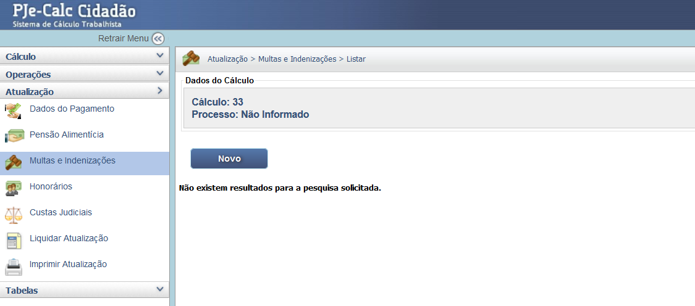

Manual Interativo de Cálculos Trabalhistas
Um guia completo e interativo para entender os cálculos na esfera judicial trabalhista.
Lançamento de Multas e Indenizações (Atualização)
O módulo de Multas e Indenizações, acessado via Atualização, é utilizado para lançar quaisquer valores devidos que não sejam verbas salariais ou rescisórias, tais como multas normativas, multas por atraso (CLT, art. 467/477), indenizações por danos morais ou materiais, e outras cominações judiciais.
1. Acesso e Inclusão de Novo Item
Na tela inicial do módulo, após a Atualização, é exibida a lista de multas e indenizações já cadastradas. Para incluir uma nova cominação, utilize o botão "Novo".
2. Configuração dos Dados da Multa
Ao criar um novo registro, você deve preencher os seguintes campos essenciais:
- Descrição: Nome da multa ou indenização (Ex: Multa art. 477 CLT, Indenização por Dano Moral).
- Credor/Devedor: Define-se quem paga e quem recebe o valor (Geralmente Reclamante e Reclamado).
- Valor: Pode ser Informado (valor fixo) ou Calculado (se for um percentual sobre uma base).
3. Parâmetros de Cálculo
* Data do Evento: A data a partir da qual o valor da multa deve ser atualizado. * Base: Se o valor for Calculado, selecione a base (Ex: Principal, Salário) sobre a qual a alíquota incidirá. * Alíquota (%): O percentual da multa, se for o caso.
Após preencher todos os dados conforme a sentença, clique em "Salvar". Para incluir esses valores atualizados no total devido, é necessário retornar e clicar em "Liquidar Atualização" no menu lateral.